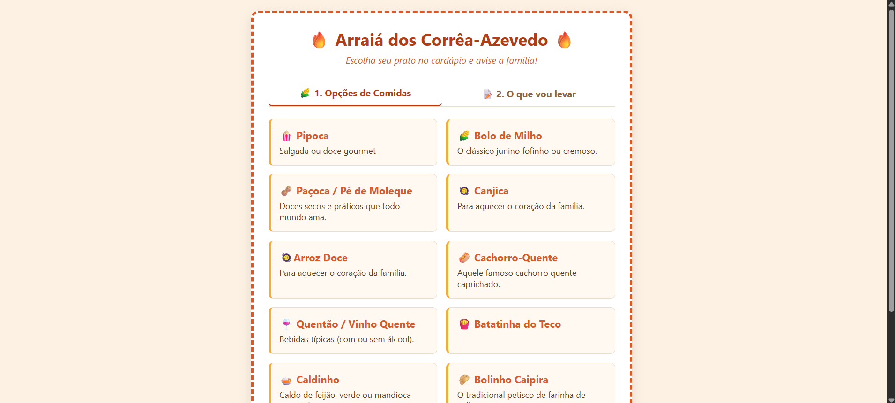
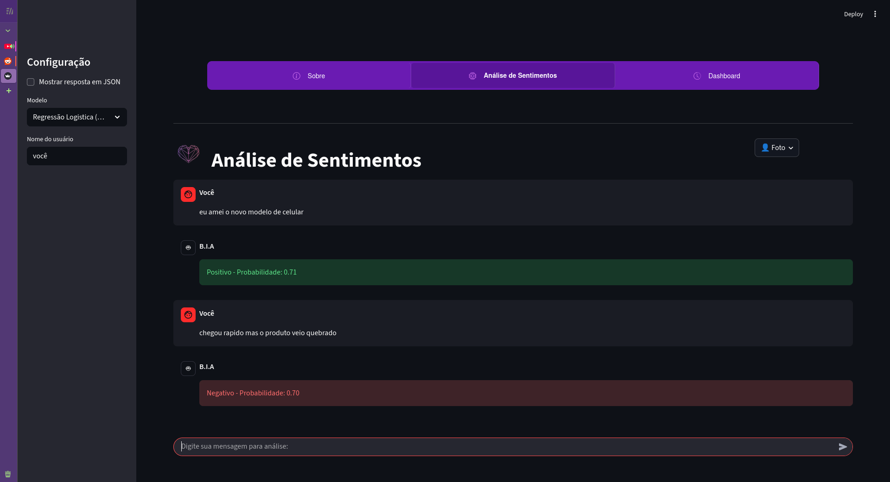

Arraiá dos Corrêa-Azevedo
Página criada para organizar os pratos de uma festa familiar, facilitando a escolha e evitando itens repetidos.
Olá, sou a Giovanna Rodrigues Felicio. Atuo no ponto de encontro entre UI/UX e desenvolvimento. Minha missão é projetar interfaces organizadas e acessíveis
Sobre mim
Sou formada em Analíse e Desenvolvimeto de Sistemas pela Faculdade de Tecnologia SENAI Félix Guisard. Tenho interesse em UX/UI, desenvolvimento e novas tecnologias. Gosto de entender os problemas antes de criar soluções e busco construir experiências digitais claras, acessíveis e úteis.
Projetos selecionados
Projetos pessoais e em equipe que demonstram meu processo de criação, organização de interfaces e desenvolvimento de soluções digitais.

Página criada para organizar os pratos de uma festa familiar, facilitando a escolha e evitando itens repetidos.

Front-end desenvolvido para uma plataforma de análise de sentimentos, com foco na interface, experiência do usuário e integração visual do sistema.
Aplicação interativa desenvolvida para cadastrar participantes e realizar sorteios de forma rápida e simples. O projeto possui exibição da lista, resultado do sorteio e opção para iniciar uma nova rodada.
Um fluxo focado em experiência do usuário e viabilidade técnica, garantindo entregas bonitas e prontas para o código.
01
Entendo o contexto, o problema, os usuários e o objetivo principal.
02
Organizo informações, fluxos, jornadas e wireframes das telas.
03
Defino identidade visual, componentes, hierarquia e responsividade.
04
Testo a navegação, identifico melhorias e refino a solução final.
Contato: